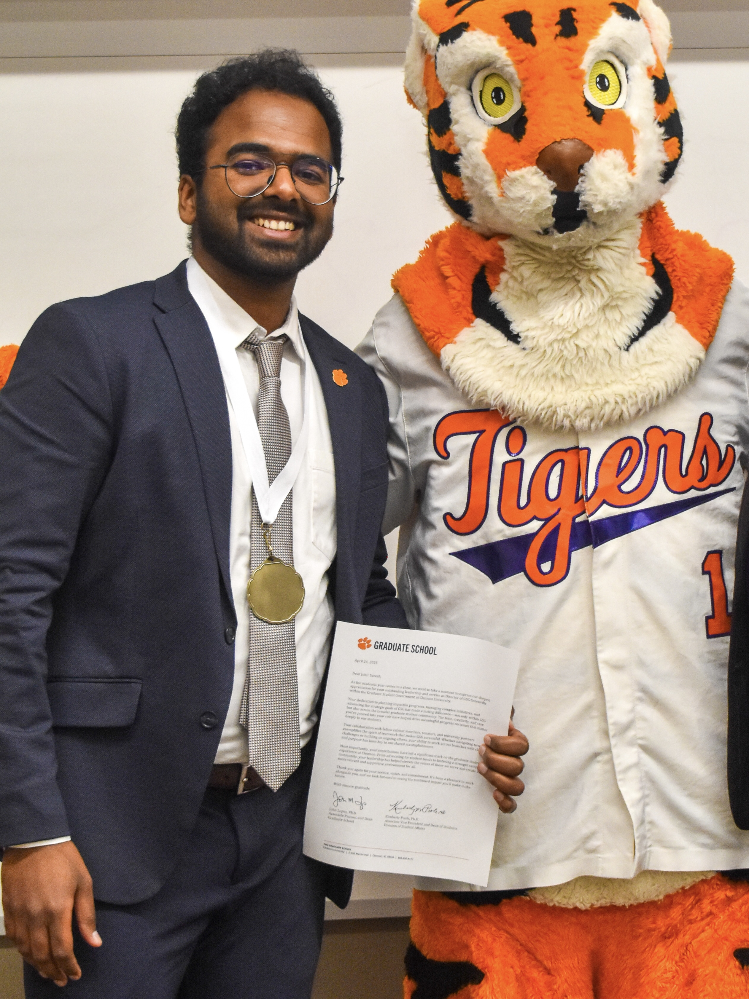

Now
Current focus
Developing control and estimation methods for high-speed off-road autonomous driving.
Hi, I’m Johir Suresh — a race car driver pursuing a Ph.D. in autonomous vehicles.
I specialize in advanced controls, estimation, and vehicle dynamics.
I spend my weekdays teaching machines how to understand motion and make better decisions; on weekends, I do the same thing for myself — usually at a racetrack, or on mountain roads.
When I’m not driving, I’m probably cooking something ambitious or taking far too many pictures.

A snapshot
Now
Developing control and estimation methods for high-speed off-road autonomous driving.
Selected
Building safer, more capable autonomy for uncertain off-road environments.
Elsewhere